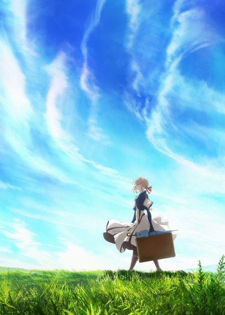
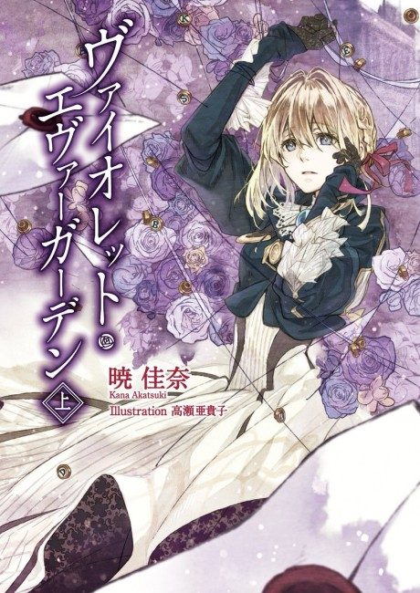

Anime
Light novel2018 · Drama, Fantasy, Slice of Life
Violet Evergarden
ヴァイオレット・エヴァーガーデン
AniList8.5
Animeter—
Episodes13 ep
SourceLight novel
Key events
These are spoilers. They stay blurred until you reveal them, one at a time or all at once.
Becoming an Auto Memory Doll Ep 1–4
- Violet decides to become an Auto Memory Doll, writing letters on others' behalf.
- At doll training school, Violet helps her classmate Luculia send a message to her wounded brother.
- On a job in Iris's hometown, Violet helps her coworker make peace with her family.
Letters and Clients Ep 5–7
- Violet helps a princess and prince exchange honest love letters before their royal wedding.
- At an observatory, Violet works alongside the lonely scholar Leon.
- While helping a playwright write for his dead daughter, Violet learns Gilbert is presumed dead.
Gilbert's Fate Ep 8–9
- Violet confronts Gilbert's brother Dietfried and visits Gilbert's grave.
- Flashbacks show how Gilbert took Violet in and what happened in his final battle.
- Violet struggles with guilt over the lives she took but chooses to keep writing letters.
Letters That Last Ep 10–11
- Violet writes fifty years' worth of birthday letters from a dying mother to her young daughter, Anne.
- Violet travels to a war zone and writes a young soldier's final letters home.
The Peace Treaty and the Air Show Ep 12–13
- Violet fights to protect Dietfried when rebels attack the train.
- Violet and her friends stop a bombing of the bridge.
- Violet writes a letter to Gilbert for the Air Show.
Surely, Someday, You Will Understand Love Ep 14
- Violet writes lyrics for the opera singer Irma.
- The song helps Irma move past her grief.
Violet Evergarden: The Movie Film
- Decades later, Anne's granddaughter Daisy traces the story of the Doll who wrote her grandmother's letters.
- Violet learns that Gilbert has been living on a remote island under a new life.
- Violet and Gilbert finally reunite, and Violet stays with him.